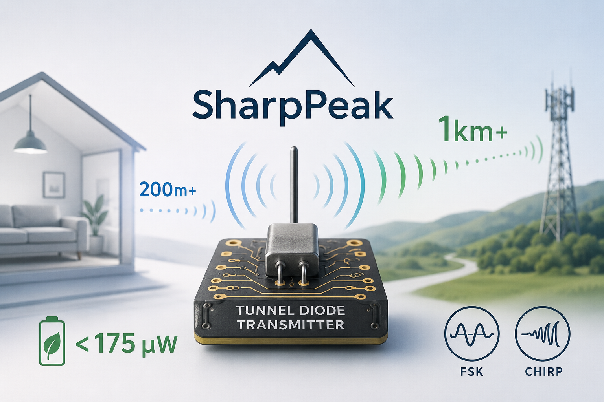
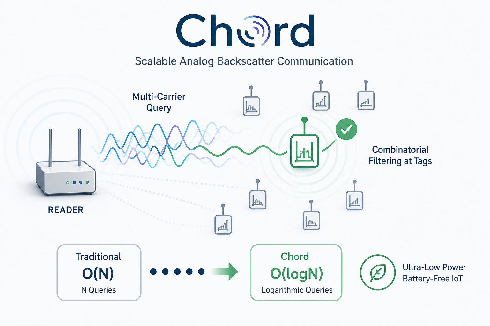
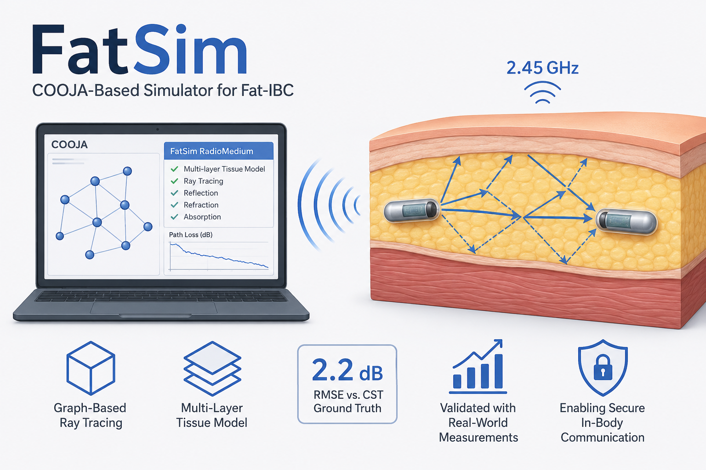
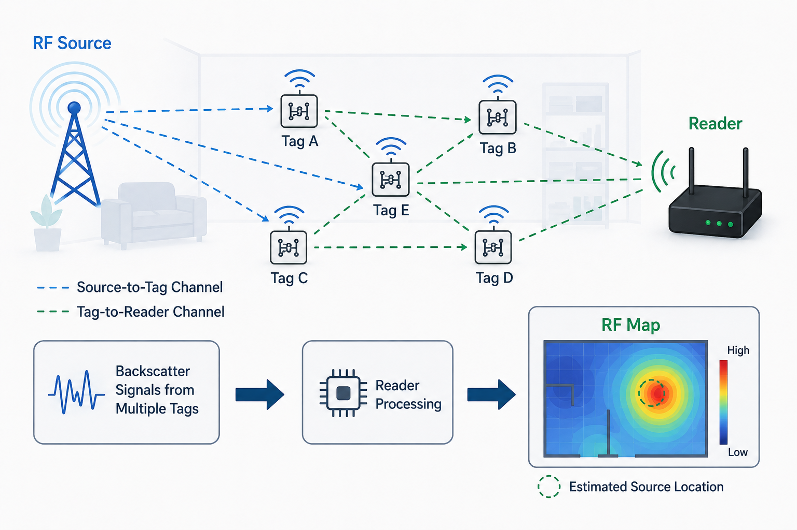
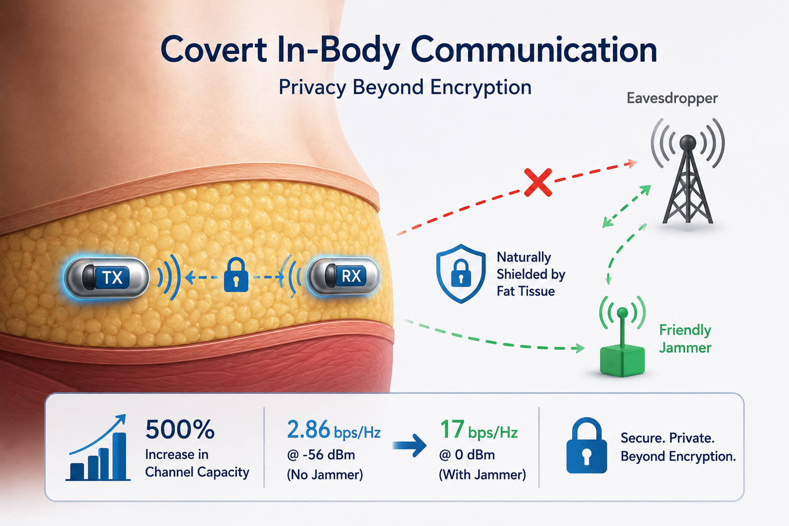

Journals

Decomposing Radiometric Fingerprints in Backscatter Systems
Decomposes the radiometric fingerprint of backscatter transmissions and — unique to backscatter — separately identifies both the tag and the carrier emitter. Random-forest and SVM classifiers over carrier, clock, and constellation features reach a true-accept ratio above 98.4% with a false-accept ratio below 1.6% across 30 devices, and the paper shows tag fingerprints are supply-voltage-sensitive, proposing design strategies to stabilize them.

Collaborative SLAM based on WiFi Fingerprint Similarity and Motion Information
Collaborative SLAM and radio-fingerprint mapping from Wi-Fi RSS and smartphone pedestrian dead reckoning — no prior map or access-point locations needed, with loop closures detected from fingerprint similarity. Achieves 0.6 m accuracy across a 130 m × 70 m area with four users.
Conferences & Workshops

SharpPeak: Unlocking the True Potential of Tunnel Diodes for Low-Power Long-Range Communication
An ultra-low-power long-range active transmitter built on tunnel diodes: under 175 µW at the RF front-end with up to 370 kbps and beyond 1 km outdoor range at 868 MHz. A novel two-stage biasing mechanism — analyzed with limit-cycle and bifurcation theory — produces stable, low-phase-noise oscillation without the external injection-locking generator prior tunnel-diode radios require. Patent-pending and recognized among IVA's Top 30 innovations in Sweden.

Chord: Multi-Tone Carrier-Assisted Querying for Analog Backscatter Systems
A querying mechanism for analog backscatter that scales as O(log N) instead of O(N): multi-tone carrier excitation meets combinatorial band-pass SAW-filter arrays and a logic-gate discriminator, giving each tag a unique frequency signature. Fully analog — no digital processing — and pluggable into existing tags without modifying their modulation.

FatSim: Network Simulator for Fat Tissue-based In-Body Communication
The first network-level simulator for fat-tissue in-body communication: a custom Java RadioMedium plugin for COOJA with a graph-based, image-method ray-tracing engine capturing reflection, refraction, and absorption at tissue boundaries. Calibrated against CST Microwave Studio field-probe data and validated to an RMSE of 2.2 dB, it lowers the barrier to in-body protocol research without phantom equipment.

Towards Ultra-Low-Power Standalone Wireless Communication Systems
Competitively selected early-career research vision: decoupling wireless signal generation from power-hungry infrastructure by combining standalone microwatt carrier generation (tunnel diodes) with frequency-selective activation for concurrent backscatter — better spectral efficiency without added power.

Localization and Tracking of Ambient RF Sources with Analog Backscatter Tags
The first analog-backscatter system that lets multiple tags sense the channel concurrently, enabling signal-strength-based localization and tracking of an ambient RF source. Frequency-to-signal-strength mapping and a path-loss model feed circle-intersection multilateration, achieving roughly 20–55 cm mean error in the 868 MHz and 2.4 GHz bands with low-cost SDR receivers.

Fat Tissue-Based In-Body Covert Communication
The first work on covert communication in in-body networks: tissue and skin attenuation hide an implanted link from external passive eavesdroppers, analyzed with detection and estimation theory and validated in phantom experiments. A friendly jammer raises covert channel capacity from 2.86 bps/Hz to 17 bps/Hz with zero bit errors at 0 dBm transmit power.

Effects on Power-plane Communications: Textile and Spacecraft Media
Studies physical-layer error characteristics of power-plane communications over conductive fabric (e-textiles) and spacecraft multi-layer insulation, relating temperature, wetness, bending, and ambient radio to data-transfer errors — identifying electrolysis from wetness and proposing mitigation.

Design Options for Aggregators for In-body Networks
Architects the gateway ("aggregator") that bridges an in-body network to the outside world via fat-tissue RF — comparing partially-implanted on-skin, non-invasive on-skin, and wirelessly-powered implanted-repeater designs across engineering, security, and medical trade-offs.

Desynchronized Querying of Analog Backscatter Tags
Prevents multiple frequency-agnostic backscatter tags from transmitting in sync by limiting each tag's activation frequencies — a band-pass filter in the front-end plus a capacitor to narrow the band, all without modifying the backscatter module. The capacitor improves the filter's frequency selectivity five-fold.

Security and Privacy for Fat Intra-Body Communication: Mechanisms and Protocol Stack
Threat analysis for fat intra-body communication — eavesdropping, injection, replay, denial-of-sleep — with countermeasures including friendly jamming, transmit-power randomization, and freshness protection, culminating in a proposed secure protocol stack.

Channel Estimation for Analog Backscatter Tags
Measures the received signal strength at an analog backscatter tag by converting incident signal strength into frequency, eliminating amplitude distortion on the tag-to-receiver path, and sharpens granularity using the harmonics square-wave backscatter generates for free. Estimates received power at the tag with 1.8% mean error.

Unlocking the Potential of Low-cost High-resolution Sensing with Analog Backscatter
Maps sensor readings directly to backscatter with no ADC and exploits higher-order harmonics to recover high-resolution data on low-cost receivers such as the RTL-SDR — up to 15× more frequency resolution at 3 m and 4× at 18 m in rich multipath, at 0 dBm carrier power.

RFID Tags as Passive Temperature Sensors
Turns commodity, already-deployed RFID tags into non-invasive, item-level temperature sensors with no infrastructure changes and no line of sight — modeling the relationship between temperature and the tag substrate's relative permittivity through RSSI. Measures 22–60 °C with 2 °C accuracy and 1.5 °C mean error.

Signal Leakage in Fat Tissue-Based In-Body Communication: Preserving Implant Data Privacy
Quantifies RF leakage out of the fat channel: signals attenuate on average ~27 dB crossing the skin, with ~1 dB/cm path loss inside fat — established through CST Studio simulation and phantom experiments. Reducing transmit power combined with an external friendly jammer prevents eavesdroppers outside the body from receiving implant data.

Towards Low-cost Sensing with Mobile Backscatter
Uses the higher-order harmonics that square-wave backscatter generates at no extra cost so that cheap, narrow-bandwidth mobile receivers like the RTL-SDR can read analog backscatter sensor data at high resolution.

HarmonicID: An Identification System for Low-Power Analog Backscatter Tags
Fully analog tag identification inspired by musical timbre: each tag is tuned to reflect a unique harmonic content, so the receiver can tell tags apart even when they transmit at the same frequency — no digital ID blocks required, and robust to walls and motion.

Elevated LiDAR based Sensing for 6G — 3D Maps with cm Level Accuracy
Multi-LiDAR fusion for infrastructure-based sensing and digital twins on Nokia 6G testbeds: point clouds registered using inherent LiDAR rings and IMU data reach 10 cm map accuracy, with CUDA-accelerated voxelization and a robot navigating on minimal on-board sensing.

Dataset: Enabling Offline Tuning of Fat Channel Communication
Open-access dataset applying a denial-of-sleep-resilient multi-channel MAC for IEEE 802.15.4 to fat-channel communication, collected on a four-layer tissue phantom with OpenMote-B nodes — supporting offline tuning of multi-armed-bandit channel selection and PHY-layer key generation from RSSI.

Sensor Deck Development for Sparse Localization and Mapping for Micro UAVs
A low-cost sensor deck for the Crazyflie 2.0 — thirteen miniature time-of-flight sensors plus a thermal camera — paired with a Rao-Blackwellized particle filter and ICP weighting to build reliable 2D maps of GPS-denied disaster areas. Firmware merged into the official Crazyflie repository.

Crowd-sensing SLAM and Radio Fingerprint Mapping based on Probabilistic Similarity Models
Extends collaborative Wi-Fi-fingerprint SLAM with a learned model of loop-closure uncertainty from short-term odometry, evaluated in a ~9,000 m² building with 1.74 m accuracy against point-cloud SLAM ground truth.

Localizing Heterogeneous Access Points using Similarity-based Sequence
Sequence-based Wi-Fi access-point localization comparing location sequences against RSS sequences — no propagation model needed — with a new similarity measure that weights match quality, outperforming model-based and prior sequence-based methods by 32.2% and 19.5%.

Follow a Human using a Mobile Robot Regardless of the Walking Speed
A human-following TurtleBot that works at any walking speed: the person carries a Google Tango phone providing visual-inertial and RGB-D mapping, while the robot localizes through its own Kinect and odometry using map-filter and trajectory-filter algorithms on ROS.
* under submission. Citation metrics on Google Scholar.
← Back to the CV